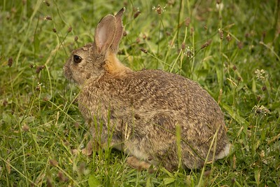

Rabbits can be affecionate pets if you spend lots of time with them!
https://www.nidirect.gov.uk/articles/suitable-environment-rabbits
https://agriculture.vic.gov.au/livestock-and-animals/animal-welfare-victoria/other-pets/rabbits/owning-a-rabbit

"Rabbit" by Keith Double. Liscensed under Public Domain Mark 1.0
homepage